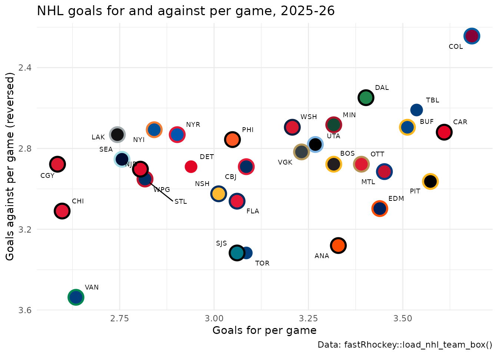
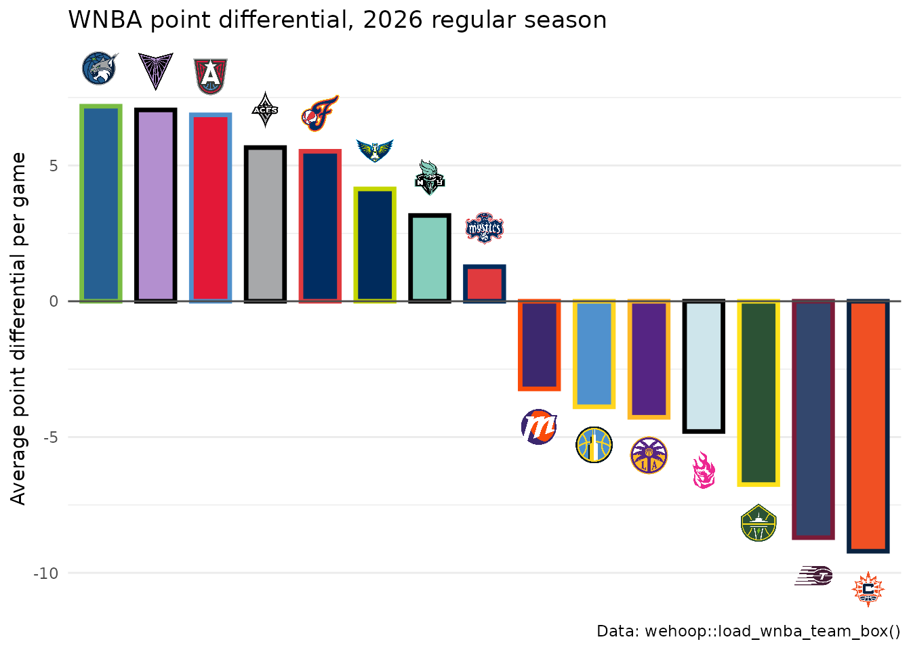
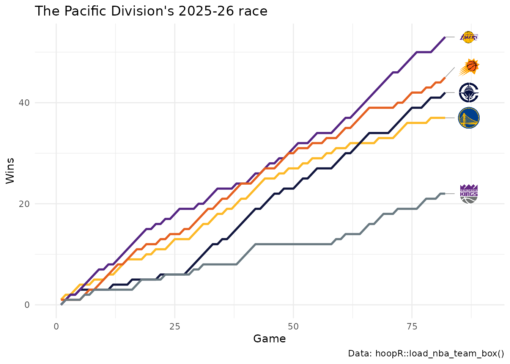
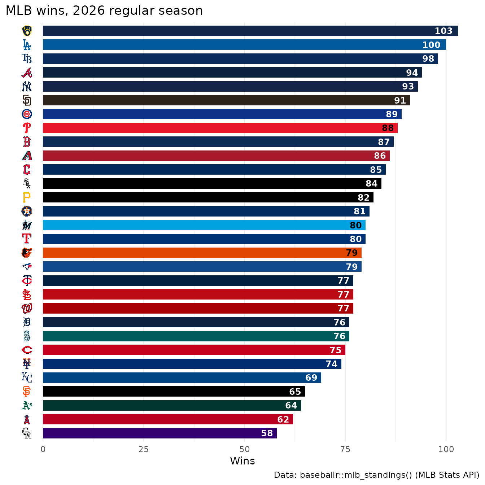
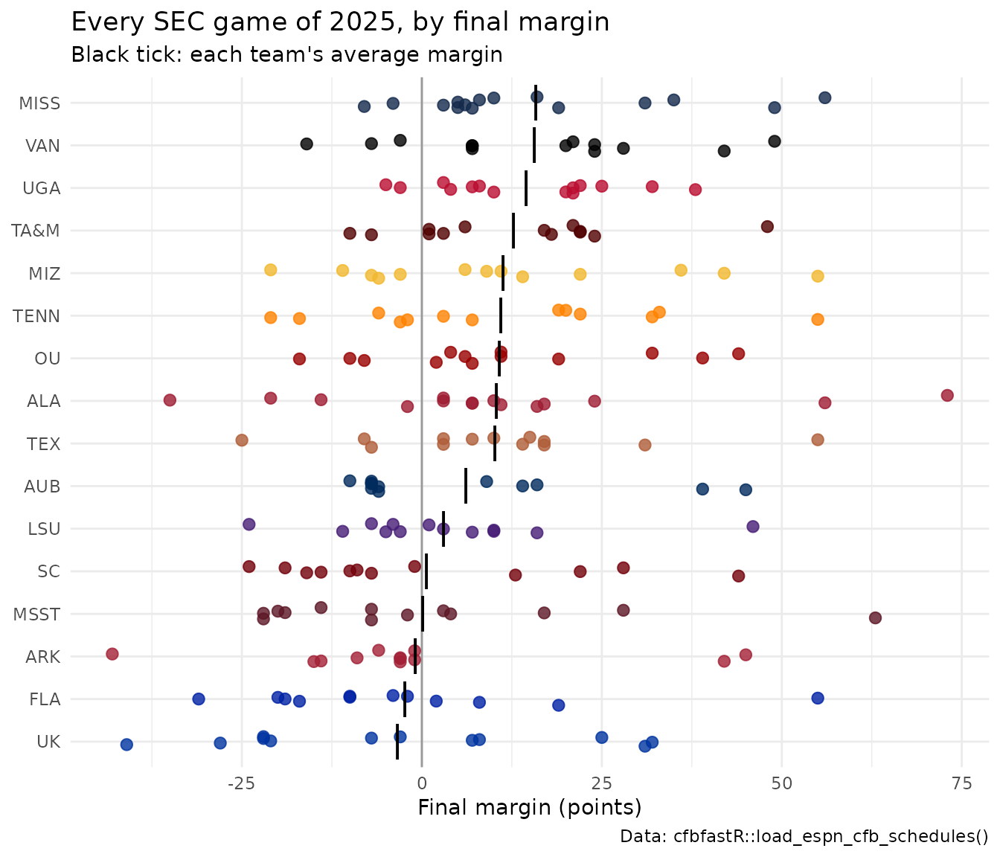
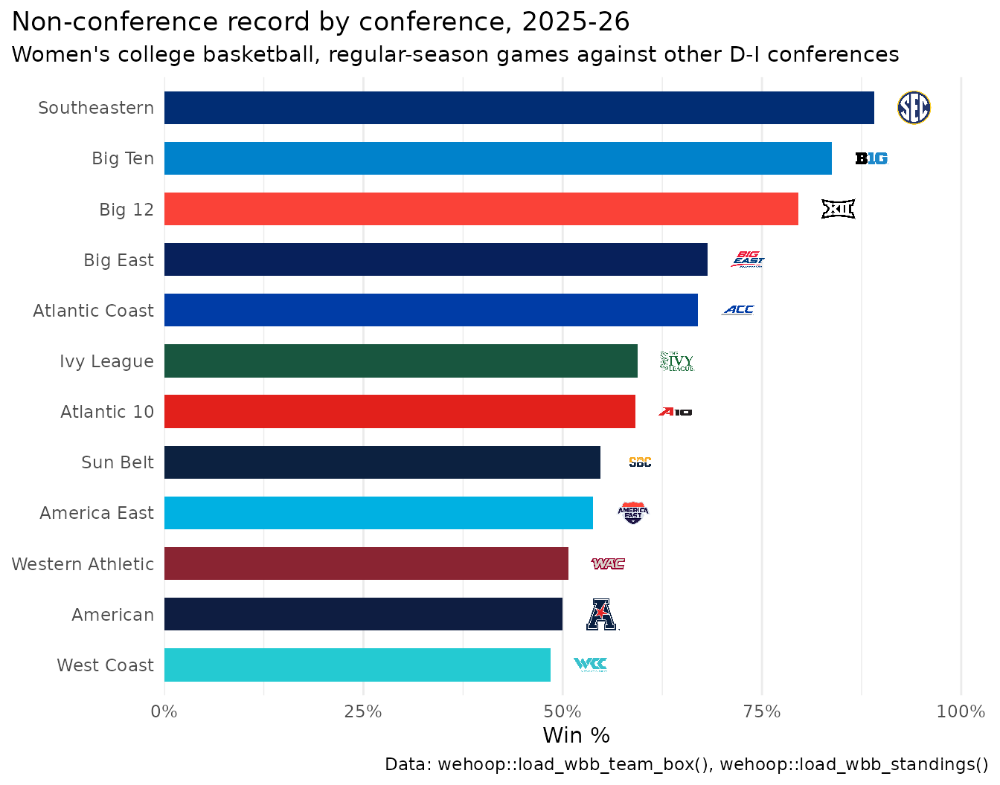
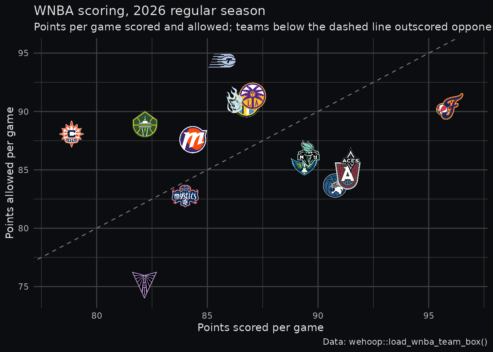

Team colors and themes
Source:vignettes/articles/cookbook-colors-themes.Rmd
cookbook-colors-themes.RmdOn this page
Ten recipes for team colors in ggplot2 and gt: a league’s palette at a glance, one color per row of your data, team fill and outline scales, colors that clash, readable text on team-colored fills, named palettes, conference colors, dark backgrounds with dark logos, and picking a table theme. The data is one season each from the NHL (fastRhockey), the NBA, the WNBA and women’s college basketball (hoopR and wehoop), MLB (baseballr) and college football (cfbfastR), all read from SportsDataverse release files except MLB’s final standings, which come from the MLB Stats API.
library(sdvplotR)
library(ggplot2)
library(dplyr, warn.conflicts = FALSE)
library(gt)
season <- 2026 # NBA, NHL and college basketball: the 2025-26 season; MLB and WNBA: 20261. See a league’s palette
team_reference() holds every team’s two colors
(color1, color2), with its conference and
division. Laid out by division, with each team’s logo above its two
swatches, it is a quick check of what a chart will look like:
nhl_ref <- team_reference("nhl") |>
arrange(division, team_abbr) |>
mutate(slot = row_number(), .by = division)
swatches <- bind_rows(
transmute(nhl_ref, division, slot, x = slot - 0.2, color = color1),
transmute(nhl_ref, division, slot, x = slot + 0.2, color = color2)
)
ggplot(nhl_ref, aes(x = slot)) +
geom_tile(aes(x = x, y = 1, fill = color), data = swatches,
width = 0.38, height = 0.5, colour = "grey70", linewidth = 0.2
) +
geom_text(aes(x = x, y = 0.6, label = color), data = swatches, size = 1.8) +
geom_sdv_logos(aes(y = 1.75, team = team_abbr), sport = "nhl", height = 0.32) +
scale_fill_identity() +
facet_wrap(~division, ncol = 1) +
scale_y_continuous(limits = c(0.4, 2.15)) +
labs(title = "NHL team colors by division", caption = "Colors: sdvplotR::team_reference()") +
theme_void() +
theme(strip.text = element_text(face = "bold", hjust = 0), plot.margin = margin(8, 8, 8, 8))
sdv_team_colors("nhl", type = "all") returns the same
pairs as "primary, secondary" strings, named by team.
2. One color per row of your data
sdv_team_colors(sport, team) returns one color per
value, in the order given, so it drops straight into
mutate(); type = "secondary" gives the other
color. Any spelling clean_team_abbrs() understands works,
here fastRhockey’s NHL codes (LAK, TBL). With
color columns in the data, the identity scales use them as they are:
nhl_games <- fastRhockey::load_nhl_team_box(season) |>
as.data.frame() |>
filter(substr(game_id, 5, 6) == "02") # 02 = regular season
nhl_teams <- nhl_games |>
summarise(gf = mean(goals), ga = mean(goals_against), .by = team_abbrev) |>
arrange(desc(gf), team_abbrev) |>
mutate(
primary = unname(sdv_team_colors("nhl", team_abbrev)),
secondary = unname(sdv_team_colors("nhl", team_abbrev, type = "secondary"))
)
head(nhl_teams, 5)
#> team_abbrev gf ga primary secondary
#> 1 COL 3.682927 2.243902 #860038 #005EA3
#> 2 CAR 3.609756 2.719512 #E30426 #000000
#> 3 PIT 3.573171 2.963415 #000000 #FDB71A
#> 4 TBL 3.536585 2.609756 #003E7E #FFFFFF
#> 5 BUF 3.512195 2.695122 #00468B #FDB71A
ggplot(nhl_teams, aes(x = gf, y = ga)) +
geom_point(aes(fill = primary, colour = secondary), shape = 21, size = 6, stroke = 1.5) +
ggrepel::geom_text_repel(aes(label = team_abbrev), size = 2.5, point.size = 6, seed = 1) +
scale_fill_identity() +
scale_colour_identity() +
scale_y_reverse() +
labs(
title = "NHL goals for and against per game, 2025-26",
x = "Goals for per game", y = "Goals against per game (reversed)",
caption = "Data: fastRhockey::load_nhl_team_box()"
) +
theme_minimal()
The labels come from ggrepel, which keeps them off each other and off
the points. A team that doesn’t resolve gets NA, which the
identity scales draw grey; check with valid_team_names()
before you publish. A white secondary, like the Lightning’s, disappears
as an outline on a white chart (recipe 4).
3. Fill with the primary, outline with the secondary
scale_fill_sdv() and scale_colour_sdv() map
a team column straight to colors, no join needed. Fill with the primary
and outline with the secondary (type = "secondary") for the
two-color look of a team’s uniform. The WNBA’s 2026 regular season by
point differential. ESPN files the All-Star Game and the Commissioner’s
Cup final as regular-season games too, so keep the games the schedule
marks as standard (type_abbreviation == "STD"):
wnba_regular <- wehoop::load_wnba_schedule(season) |>
as.data.frame() |>
filter(season_type == 2, type_abbreviation == "STD") |>
pull(game_id)
wnba <- wehoop::load_wnba_team_box(season) |>
as.data.frame() |>
filter(game_id %in% wnba_regular) |>
summarise(
games = n(),
pf = mean(team_score),
pa = mean(opponent_team_score),
.by = team_abbreviation
) |>
mutate(diff = pf - pa, team = team_abbreviation) |>
arrange(desc(diff), team) |>
mutate(team_f = factor(team, levels = team))
ggplot(wnba, aes(x = team_f, y = diff)) +
geom_col(aes(fill = team, colour = team), width = 0.7, linewidth = 1.2) +
geom_hline(yintercept = 0, colour = "grey30") +
geom_sdv_logos(aes(y = diff + if_else(diff >= 0, 1.4, -1.4), team = team), sport = "wnba", width = 0.05) +
scale_fill_sdv(sport = "wnba") +
scale_colour_sdv(sport = "wnba", type = "secondary") +
labs(
title = "WNBA point differential, 2026 regular season",
x = NULL, y = "Average point differential per game",
caption = "Data: wehoop::load_wnba_team_box()"
) +
theme_minimal() +
theme(axis.text.x = element_blank(), panel.grid.major.x = element_blank())
alpha = on either scale fades the colors, which helps
when a logo sits on the bar.
4. When two teams’ colors clash
Some rivals share a color: the Lakers’, Kings’ and Suns’ primaries are all purple, and all three play in the NBA’s Pacific Division. Measure the gap between two colors (a plain RGB distance does the job) and fall back to a team’s secondary when its primary is too close to one already used. Walk the teams best record first, so the leaders keep their primaries:
color_gap <- function(a, b) {
m <- grDevices::col2rgb(c(a, b)) / 255
sqrt(sum((m[, 1] - m[, 2])^2)) / sqrt(3) # 0 = same color, 1 = black vs white
}
pacific <- c("GS", "LAC", "LAL", "PHX", "SAC") # the NBA's Pacific Division
nba_regular <- hoopR::load_nba_schedule(season) |>
as.data.frame() |>
filter(season_type == 2, type_abbreviation == "STD") |> # no All-Star or NBA Cup final
pull(game_id)
runs <- hoopR::load_nba_team_box(season) |>
as.data.frame() |>
filter(game_id %in% nba_regular, team_abbreviation %in% pacific) |>
arrange(team_abbreviation, game_date, game_id) |>
mutate(game_no = row_number(), wins = cumsum(team_winner), .by = team_abbreviation) |>
rename(team = team_abbreviation)
finish <- runs |>
slice_max(game_no, n = 1, by = team) |>
arrange(desc(wins), team)
chosen <- character()
for (team in finish$team) {
primary <- sdv_team_colors("nba", team)
close <- length(chosen) > 0 && min(vapply(chosen, color_gap, numeric(1), b = primary)) < 0.15
chosen[team] <- if (close) sdv_team_colors("nba", team, type = "secondary") else primary
}
data.frame(
team = finish$team,
primary = unname(sdv_team_colors("nba", finish$team)),
used = unname(chosen[finish$team])
)
#> team primary used
#> 1 LAL #552583 #552583
#> 2 PHX #29127A #E56020
#> 3 LAC #12173F #12173F
#> 4 GS #FDB927 #FDB927
#> 5 SAC #5A2D81 #6A7A82
end <- max(finish$game_no)
# keep line-end logos one logo height apart (see the logos cookbook)
finish <- arrange(finish, wins, team)
finish$spot <- Reduce(function(below, y) max(y, below + 5), finish$wins, accumulate = TRUE)
ggplot(runs, aes(x = game_no, y = wins)) +
geom_line(aes(colour = team), linewidth = 1) + # colour here only: on the logos it would tint them
geom_segment(aes(x = game_no, xend = end + 2, y = wins, yend = spot),
data = finish, colour = "grey60", linewidth = 0.3
) +
geom_sdv_logos(aes(x = end + 5, y = spot, team = team), data = finish, sport = "nba", height = 0.08) +
scale_colour_manual(values = chosen, guide = "none") +
scale_x_continuous(limits = c(0, end + 8)) +
labs(
title = "The Pacific Division's 2025-26 race",
x = "Game", y = "Wins",
caption = "Data: hoopR::load_nba_team_box()"
) +
theme_minimal()
A secondary is not always safe either: the Celtics’ is white, which vanishes on a white chart. Run the same check against the background.
5. Readable text on team-colored fills
Text on a team color needs the right ink: white on navy, black on gold. Pick it from the fill’s relative luminance (the WCAG formula): above 0.179, black text contrasts more than white. MLB’s 2026 regular season, wins printed inside each bar:
ink <- function(fill) {
rgb <- grDevices::col2rgb(fill) / 255
linear <- ifelse(rgb <= 0.04045, rgb / 12.92, ((rgb + 0.055) / 1.055)^2.4)
luminance <- colSums(linear * c(0.2126, 0.7152, 0.0722))
ifelse(luminance > 0.179, "black", "white")
}
mlb_ids <- baseballr::mlb_teams(season = season, sport_ids = 1) |>
as.data.frame() |>
select(team_records_team_id = team_id, team_abbreviation)
mlb <- baseballr::mlb_standings(season = season, league_id = "103,104") |>
as.data.frame() |>
inner_join(mlb_ids, by = "team_records_team_id") |>
transmute(
team = clean_team_abbrs(team_abbreviation, sport = "mlb"),
wins = team_records_wins,
games = team_records_games_played
) |>
arrange(wins, desc(team)) |>
mutate(
team_f = factor(team, levels = team),
fill = unname(sdv_team_colors("mlb", team)),
text = ink(fill)
)
range(mlb$games)
#> [1] 161 162
ggplot(mlb, aes(x = wins, y = team_f)) +
geom_col(aes(fill = fill), width = 0.75) +
geom_text(aes(label = wins, colour = text), hjust = 1.3, size = 3.2, fontface = "bold") +
scale_fill_identity() +
scale_colour_identity() +
scale_y_discrete(labels = NULL) +
geom_sdv_logos(aes(x = -4, team = team), sport = "mlb", height = 0.028) +
labs(
title = "MLB wins, 2026 regular season",
x = "Wins", y = NULL,
caption = "Data: baseballr::mlb_standings() (MLB Stats API)"
) +
theme_minimal() +
theme(panel.grid.major.y = element_blank())
In a gt table, gt::data_color() picks the ink for you
(autocolor_text, on by default), and
gt_theme_sdv_team() does the same for its header (see
recipe 10).
6. A named palette for a manual scale
sdv_color_palette(sport, teams) returns a named vector
of hex codes, the shape scale_colour_manual(values = )
wants. The SEC’s 2025 season, one dot per game by final margin, teams
ordered by their average:
sec <- team_reference("cfb") |>
filter(conference == "SEC") |>
pull(team_abbr)
cfb <- cfbfastR::load_espn_cfb_schedules(2025) |> as.data.frame()
margins <- bind_rows(
transmute(cfb, game_id, team = home_abbreviation, margin = home_score - away_score),
transmute(cfb, game_id, team = away_abbreviation, margin = away_score - home_score)
) |>
filter(team %in% sec)
order <- margins |>
summarise(avg = mean(margin), .by = team) |>
arrange(avg, desc(team))
margins <- mutate(margins, team = factor(team, levels = order$team))
ggplot(margins, aes(x = margin, y = team, colour = team)) +
geom_vline(xintercept = 0, colour = "grey60") +
geom_point(size = 2.4, alpha = 0.8, position = position_jitter(width = 0, height = 0.15, seed = 1)) +
geom_point(aes(x = avg), data = order, shape = "|", size = 6, colour = "black") +
scale_colour_manual(values = sdv_color_palette("cfb", sec), guide = "none") +
labs(
title = "Every SEC game of 2025, by final margin",
subtitle = "Black tick: each team's average margin",
x = "Final margin (points)", y = NULL,
caption = "Data: cfbfastR::load_espn_cfb_schedules()"
) +
theme_minimal()
Several SEC primaries are near-identical crimsons and blues; across this many teams, the axis labels carry the identity and the colors only group the dots.
7. Conference colors
Conferences are rows in sdvplotR’s team data too, so
sdv_team_colors() and geom_sdv_logos() take a
conference’s name. Women’s college basketball, 2025-26: how each
conference’s teams did against teams from other D-I conferences, with
each season’s membership from wehoop’s standings:
wbb_conf <- wehoop::load_wbb_standings(season) |>
as.data.frame() |>
distinct(team_id, conference = group_name)
wbb_games <- wehoop::load_wbb_team_box(season) |>
as.data.frame() |>
filter(season_type == 2) |>
inner_join(wbb_conf, by = "team_id") |>
inner_join(rename(wbb_conf, opponent_team_id = team_id, opp_conference = conference),
by = "opponent_team_id"
) |>
filter(conference != opp_conference)
nonconf <- wbb_games |>
summarise(games = n(), win_pct = mean(team_winner), .by = conference) |>
arrange(desc(win_pct), conference) |>
slice_head(n = 12) |>
mutate(
label = sub(" Conference$", "", conference),
label = factor(label, levels = rev(label)),
fill = unname(sdv_team_colors("wbb", conference))
)
ggplot(nonconf, aes(x = win_pct, y = label)) +
geom_col(aes(fill = fill), width = 0.65) +
geom_sdv_logos(aes(x = win_pct + 0.05, team = conference), sport = "wbb", height = 0.06) +
scale_fill_identity() +
scale_x_continuous(labels = scales::label_percent(), expand = expansion(mult = c(0, 0.1))) +
labs(
title = "Non-conference record by conference, 2025-26",
subtitle = "Women's college basketball, regular-season games against other D-I conferences",
x = "Win %", y = NULL,
caption = "Data: wehoop::load_wbb_team_box(), wehoop::load_wbb_standings()"
) +
theme_minimal() +
theme(panel.grid.major.y = element_blank(), plot.title.position = "plot")
team_reference(sport, include_conferences = TRUE) lists
the conference rows with their colors and logo URLs.
8. A dark background, dark logos and a matching table
Many logos have a dark version for dark backgrounds, in
team_reference()’s logo_dark_url; draw it with
geom_from_path(). theme_bg holds the
background color of every gt theme, so a chart can sit on the same
canvas as a table in that theme. The WNBA on
gt_theme_midnight()’s background:
bg <- theme_bg$bg[theme_bg$theme == "gt_theme_midnight"]
bg
#> [1] "#0C0D10"
dark <- wnba |>
inner_join(select(team_reference("wnba"), team = team_abbr, logo_dark_url), by = "team")
ggplot(dark, aes(x = pf, y = pa)) +
geom_abline(slope = 1, intercept = 0, colour = "grey45", linetype = "dashed") +
geom_from_path(aes(path = logo_dark_url), width = 0.065) +
scale_x_continuous(expand = expansion(mult = 0.1)) +
scale_y_continuous(expand = expansion(mult = 0.1)) +
labs(
title = "WNBA scoring, 2026 regular season",
subtitle = "Points per game scored and allowed; teams below the dashed line outscored opponents",
x = "Points scored per game", y = "Points allowed per game",
caption = "Data: wehoop::load_wnba_team_box()"
) +
theme_minimal() +
theme(
plot.background = element_rect(fill = bg, colour = NA),
text = element_text(colour = "grey90"),
axis.text = element_text(colour = "grey75"),
panel.grid = element_line(colour = "grey25")
)
dark |>
arrange(desc(diff), team) |>
head(5) |>
select(team, pf, pa, diff) |>
gt() |>
gt_sdv_logos(columns = team, sport = "wnba") |>
fmt_number(columns = c(pf, pa, diff), decimals = 1) |>
cols_label(team = "", pf = "Scored", pa = "Allowed", diff = "Margin") |>
tab_header(title = "The WNBA's best margins, 2026") |>
gt_theme_midnight()| The WNBA's best margins, 2026 | |||
| Scored | Allowed | Margin | |
|---|---|---|---|
 |
90.8 | 83.7 | 7.2 |
 |
82.2 | 75.1 | 7.0 |
 |
91.3 | 84.5 | 6.9 |
 |
91.5 | 85.8 | 5.7 |
 |
96.0 | 90.4 | 5.5 |
gt_sdv_logos() draws the regular logos; in a reactable
table, reactable_sdv_logos(variant = "dark") picks the dark
ones.
9. Choose a gt theme
gt_theme_preview() renders the same rows in several
themes side by side, so you can pick one by eye before styling the full
table. The NHL’s top scoring teams in six themes:
nhl_top <- nhl_teams |>
transmute(Team = team_abbrev, `GF/G` = round(gf, 2), `GA/G` = round(ga, 2)) |>
head(5)
gt_theme_preview(
nhl_top,
themes = c(
"gt_theme_sdv", "gt_theme_athletic", "gt_theme_kenpom",
"gt_theme_savant", "gt_theme_broadsheet", "gt_theme_midnight"
),
ncol = 3
)| Team | GF/G | GA/G |
|---|---|---|
| COL | 3.68 | 2.24 |
| CAR | 3.61 | 2.72 |
| PIT | 3.57 | 2.96 |
| TBL | 3.54 | 2.61 |
| BUF | 3.51 | 2.70 |
| Team | GF/G | GA/G |
|---|---|---|
| COL | 3.68 | 2.24 |
| CAR | 3.61 | 2.72 |
| PIT | 3.57 | 2.96 |
| TBL | 3.54 | 2.61 |
| BUF | 3.51 | 2.70 |
|
toss_out_spanner_dev
|
||
|---|---|---|
| Team | GF/G | GA/G |
| COL | 3.68 | 2.24 |
| CAR | 3.61 | 2.72 |
| PIT | 3.57 | 2.96 |
| TBL | 3.54 | 2.61 |
| BUF | 3.51 | 2.70 |
| Team | GF/G | GA/G |
|---|---|---|
| COL | 3.68 | 2.24 |
| CAR | 3.61 | 2.72 |
| PIT | 3.57 | 2.96 |
| TBL | 3.54 | 2.61 |
| BUF | 3.51 | 2.70 |
| Team | GF/G | GA/G |
|---|---|---|
| COL | 3.68 | 2.24 |
| CAR | 3.61 | 2.72 |
| PIT | 3.57 | 2.96 |
| TBL | 3.54 | 2.61 |
| BUF | 3.51 | 2.70 |
| Team | GF/G | GA/G |
|---|---|---|
| COL | 3.68 | 2.24 |
| CAR | 3.61 | 2.72 |
| PIT | 3.57 | 2.96 |
| TBL | 3.54 | 2.61 |
| BUF | 3.51 | 2.70 |
Leave themes out to see every theme in the package;
file = saves the grid as one PNG (it needs a headless
Chrome, through webshot2).
10. A table in a team’s colors
gt_theme_sdv_team() dresses a table in one team’s
colors, with header text in whichever ink reads on them. The team with
the NBA’s best point differential, and its top scorers:
players <- hoopR::load_nba_player_box(season) |>
as.data.frame() |>
filter(game_id %in% nba_regular, !did_not_play)
best <- players |>
distinct(game_id, team_abbreviation, team_score, opponent_team_score) |>
summarise(diff = mean(team_score - opponent_team_score), .by = team_abbreviation) |>
slice_max(diff, n = 1, with_ties = FALSE) |>
pull(team_abbreviation)
players |>
filter(team_abbreviation == best) |>
summarise(
games = n(), ppg = mean(points), rpg = mean(rebounds), apg = mean(assists),
.by = c(athlete_id, athlete_display_name)
) |>
filter(games >= 20) |>
arrange(desc(ppg), athlete_id) |>
head(6) |>
gt() |>
gt_sdv_headshots(columns = athlete_id, sport = "nba") |>
fmt_number(columns = c(ppg, rpg, apg), decimals = 1) |>
cols_label(
athlete_id = "", athlete_display_name = "Player", games = "GP",
ppg = "PTS", rpg = "REB", apg = "AST"
) |>
tab_header(
title = paste(team_reference("nba")$team_name[team_reference("nba")$team_abbr == best], "top scorers"),
subtitle = "2025-26 regular season, per game, 20+ games"
) |>
tab_source_note("Data: hoopR::load_nba_player_box()") |>
gt_theme_sdv_team(team = best, sport = "nba")| Oklahoma City Thunder top scorers | |||||
| 2025-26 regular season, per game, 20+ games | |||||
| Player | GP | PTS | REB | AST | |
|---|---|---|---|---|---|
 |
Shai Gilgeous-Alexander | 68 | 31.1 | 4.3 | 6.6 |
 |
Chet Holmgren | 69 | 17.1 | 8.9 | 1.7 |
 |
Jalen Williams | 33 | 17.1 | 4.6 | 5.5 |
 |
Ajay Mitchell | 57 | 13.6 | 3.3 | 3.6 |
 |
Isaiah Joe | 71 | 11.1 | 2.5 | 1.3 |
 |
Jared McCain | 31 | 10.1 | 2.0 | 0.9 |
| Data: hoopR::load_nba_player_box() | |||||
gt_theme_sdv() is the house look in light or dark
(style = "dark"), for tables that belong to no one
team.